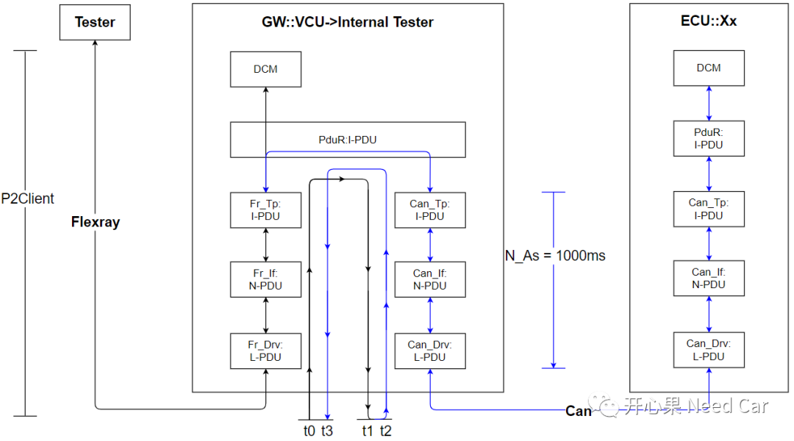
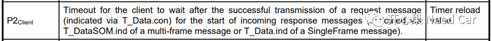
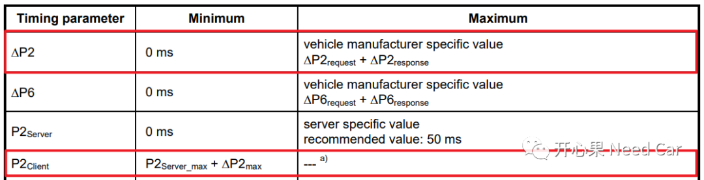
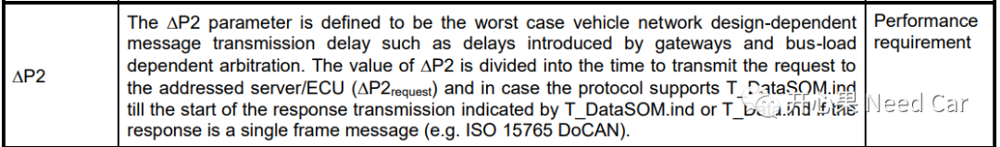
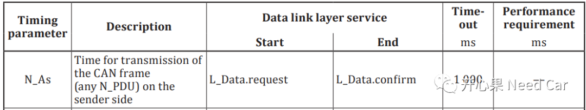
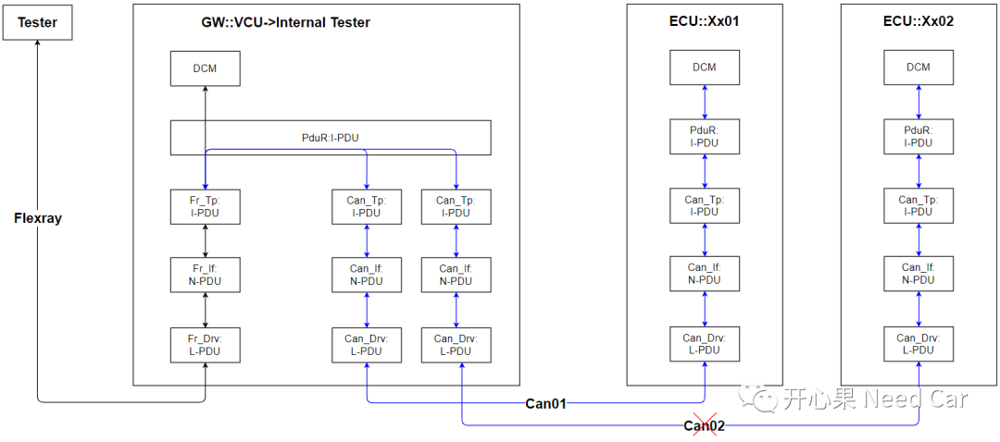
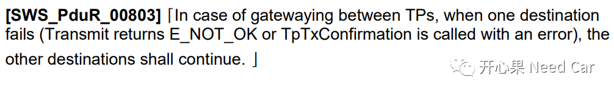

汽车嵌入式开发中，开发ECU网关节点(GW:Gateway)时，难度会提升不少，这些难度中就包含对时间参数的解读问题。本文着重给大家聊一下P2Client、▲P2 = ▲P2Request + ▲P2Response、N_As时间参数。
假设：Tester发送功能寻址指令Request01给GW::VCU，因为VCU的GW属性，VCU需要将Request01转发，即由Flexray总线路由到Can总线，进而将Request01发送给Ecu::Xx，Request01路由示意如如下所示：

注意：诊断路由，需要通过Xx_Tp层。
VCU既然是GW，相对于ECU::Xx，就是一个Tester。
如果对各层的PDU类型不清楚，可以参考前文Autosar通信栈：I-PDU、N-PDU、L-PDU，要掰扯清楚。
1、P2Client


P2Client时间范围的表达式：P2Client_max＞P2Client＞P2Server_max + ▲P2max 。P2Client_max是一个性能参数，由OEM设定。
这里假设：P2Server_max = 50ms，单向路由时间10ms，P2Client_max = 150ms，则70ms < P2Client < 150ms。为什么最小时间是70ms，不是60ms?稍后解释。
2、▲P2

发送路由：
对应第一小节图中的Fr->Can路由，即▲P2request = t1 - t0
响应路由：
对应第一小节图中的Can->Fr路由，即▲P2response = t3 - t2
3、N_As

我们将问题进一步拓展，如果GW节点将诊断指令路由到多个节点，如下图中的ECU::Xx01和ECU::Xx02。这里提一个问题：如果Can02不可用（比如：VCU Can02对应的Transceiver损坏或者未有连接），Can01上的刷写是否应该继续？

我们先看一下Autosar的答案，如下所示：

答案很明确：如果TPs间的路由，有一路Fail（调用发送接口返回值为E_NOT_OK），不应影响其他TPs间的路由。如果OEM约束了你的开发：要符合Autosar规范。那么PduR的路由功能应满足上述规范。
写在最后

参考资料
AUTOSAR_SWS_PDURouter.pdf
ISO 15765-2.pdf
ISO 14229-1_2013(E).pdf
往期精彩回顾